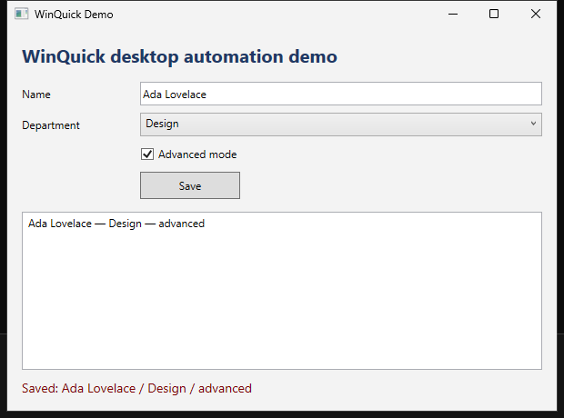

Run Windows commands
Run a Windows executable and get its stdout, stderr and exit code back on the host.
winquick run -- your-tool.exe
v0.4.1 active development
WinQuick runs Windows commands, builds, tests and desktop applications in a disposable environment from macOS, Linux or Windows. Each run starts clean and is discarded when it finishes.
What it does
Run a Windows executable and get its stdout, stderr and exit code back on the host.
winquick run -- your-tool.exe
Copy a project into Windows, run the build or test suite, then retrieve only the artifacts you request.
winquick run -w . -- dotnet test
Run WPF and WinForms applications headlessly and control them through Microsoft UI Automation.
winquick ui-test MyApp.csproj --script smoke.uitest
Each run
Desktop testing
The desktop capability starts a headless Windows desktop. WinQuick can launch applications, query controls, interact with them and capture screenshots.
Desktop documentation
Performance and support
WinQuick is built for macOS, Linux and Windows, but the hosts are not equally mature yet.
cmd /c verdotnet --versionMedians on Apple Silicon M4 Pro, macOS 26. Windows uses a cold boot path and has different timings.
Install
Homebrew installs WinQuick and its host dependencies.
brew install carlbomsdata/tap/winquick
Download the current Windows archive. QEMU 11 or newer is required.
Download the matching archive. Guest execution still needs physical-hardware verification.
Microsoft's Validation OS image is downloaded separately under Microsoft's licence.
winquick setup --accept-microsoft-terms
WinQuick is open source under Apache-2.0. It runs locally, requires no account and sends no telemetry. It is intended for development and testing, not as a hardened malware sandbox.